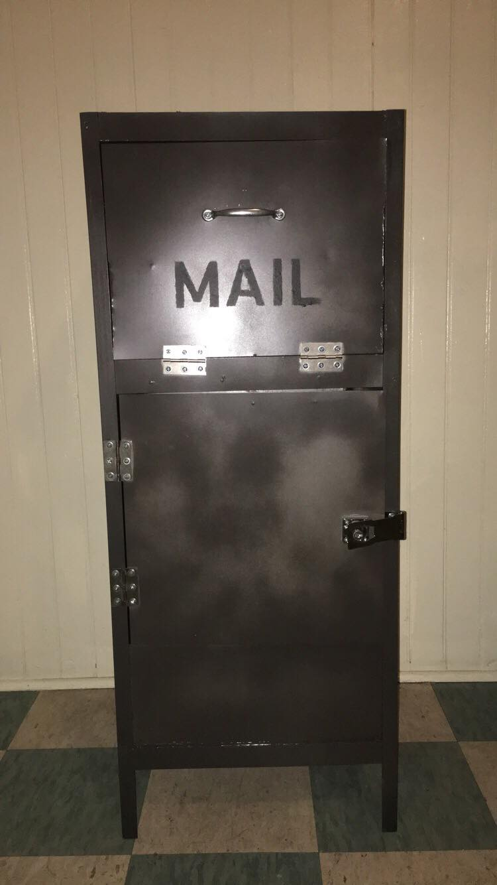
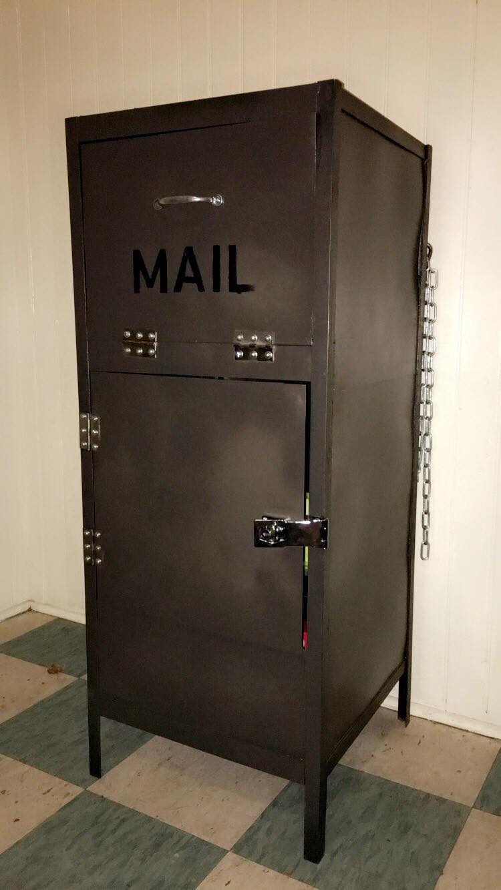
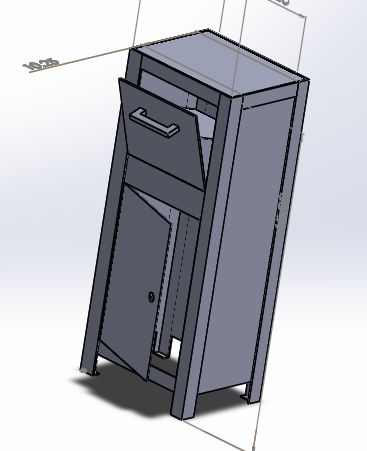
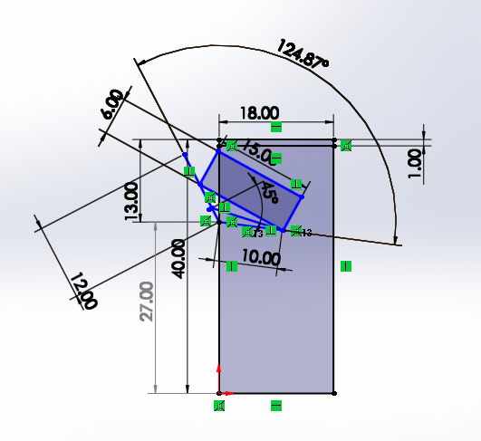

The Mailbox’s First Full Assembly
With just 35% done at the start of the week, the Phis were able to pull everything together and create a fully functioning first iteration of the Phiiine Box. Phoebe and Emily W went into Davis Shop all day on Wednesday and Thursday and finished up welding all of the side sheet metal panels and then proceeded to assembling and attaching the doors and necessary hinges/handles. After they finished the main construction of the mailbox, the mailbox was transported to Jarek’s place for final touches (sealant & painting, etc.) and to add electronic components. The Phis were able to successfully complete their final project which featured slack notifications for delivered packages and a one-way door at the top to prevent theft. However, our minimum viable product did have a lot of faults. The brothers pointed out a lot of security, functionality, as well as weatherproofing concerns on the current Phiiine box. Thus, the Phis will need to step it up once more and make some more adjustments to polish off the mailbox. A more extensive list of updates can be found below in the Updates & Fixes: Frame section.
 The finished Phiiine Box!  Side view of the Phiiine Box.Testing and Addition of Power Source
At the start of the week, the Slackbot had been fully functional; however, Emily H. and HaiTao Zhang still had to connect the solar panel to all the other power components, namely the battery pack and the PowerBoost capacitor. After reconsidering options for solar panel placement, they decided it would be best to get an extension cord so that we would be able to mount the solar panel on the actual house without the restriction of power cord length. This should also greatly decrease chances of the solar panel being stolen. Once all the power components and their arrangement were figured out, the next step was combining everything with the already wired sensors to adjust the sensing distance and edit parameters in the program itself and calibrate the sensors to the unique dimensions of our mailbox.
Mailbox Updates and Fixes
After running through the first iteration with the brothers at their first EP Presentation, the Phi class noted the following changes to make to their mailbox.
The Electronics
Adding on to the mailbox’s functionality, we will be editing the code behind our hardware so that the sensors are not only able to detect when there is a package delivered but also able to determine whether or not the main mail compartment is empty or has a package of some sort. To implement this, we will simply determine the average measurement of the distance from the sensors to the back of the mailbox, along with an appropriate corresponding margin of error. We will assign a variable to this value in the code and, anytime a status request is received, the program will compare the predetermined distance of an empty mailbox and the current distance measurement to determine whether or not the difference is great enough to indicate that a package has indeed been delivered and dropped into the package compartment, shortening the distance between the sensors and the opposing surface. The final step will then be to output this information in a clear way through the Slackbot to the user.
The Frame
A lot of the criticism that the brothers had about our mailbox was mainly concerning theft and waterproofing. Since we were on a time crunch, Phoebe and Emily didn’t get a chance to add additional features to the mailbox such as flat bars to be welded on top of the gap where the two pieces of sheet metal meet on the sides of the mailbox. They also didn’t get a chance to add a door stopper and rubber trim along the edges of the doors so that the mailbox would be more flush/protective. Since we were given an additional week to work on EP, Phoebe and Emily will make all of the necessary adjustments to ensure that the mailbox is up to the brotherhood’s standards. New CAD designs can be found below.
  Design Sketches